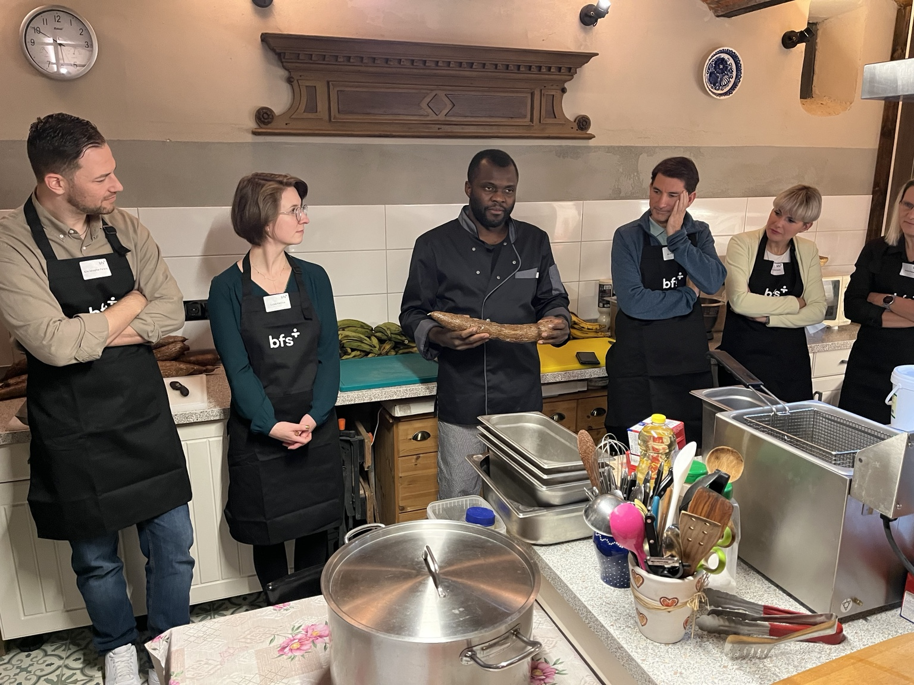
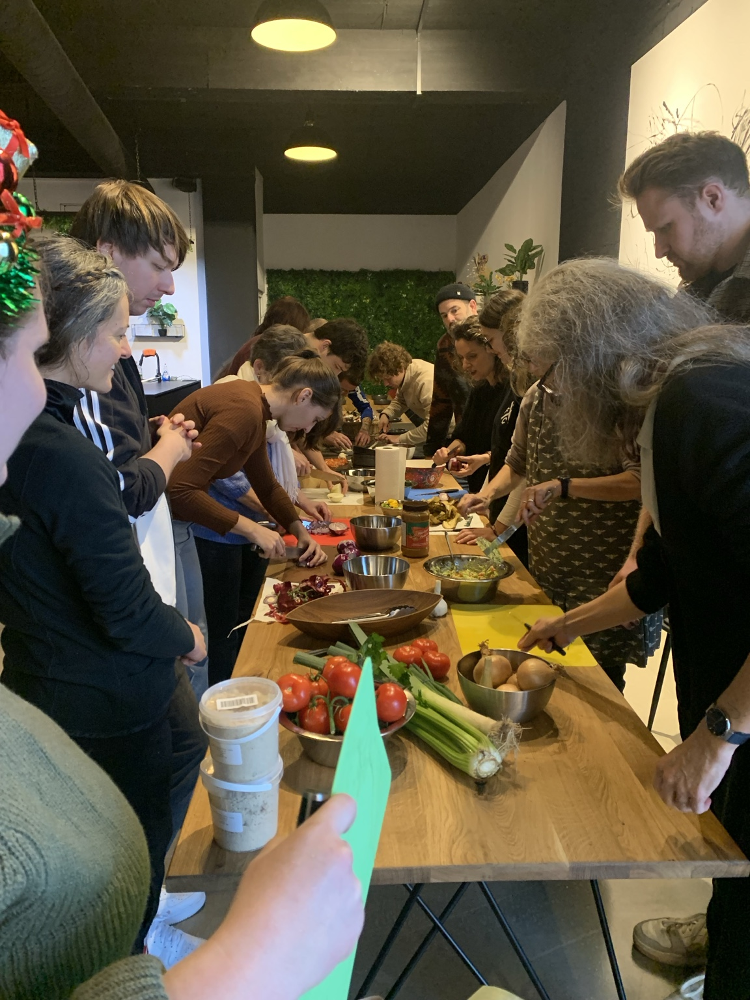
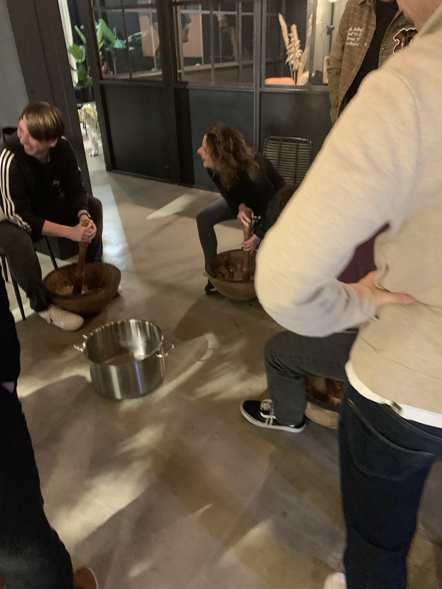
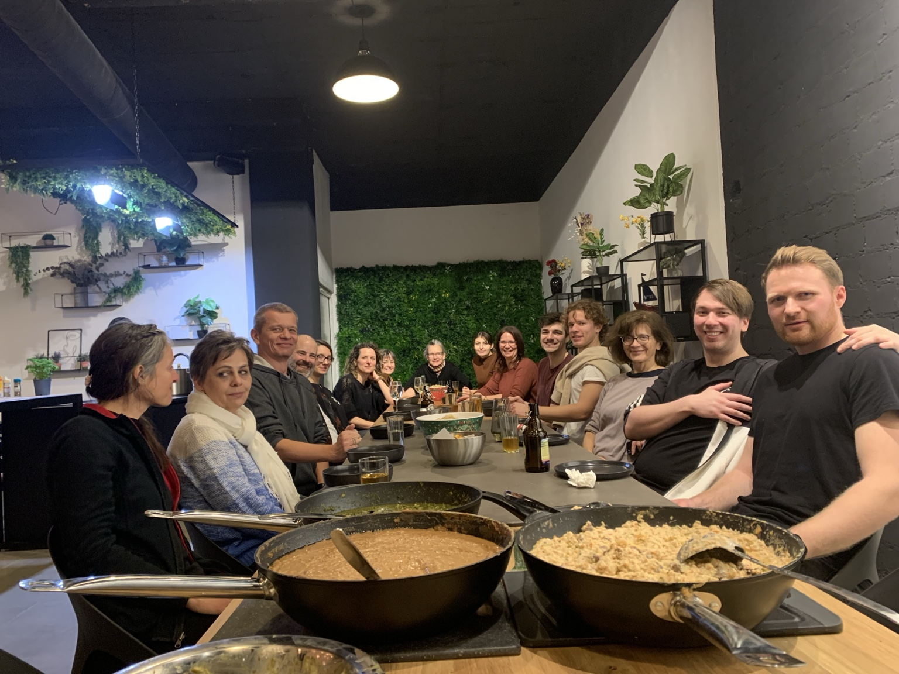

01DISCOVERGEMEINSAM
GEMEINSAM
ENTDECKEN.
African Food, Zutaten und ihre Geschichten kennenlernen.

AFRICAN FOOD · CULTURE · COMMUNITY
Gemeinsam African Food entdecken. Fufu kennenlernen und stampfen. Neue Leute treffen und den Abend gemeinsam genießen.
ICH HABE INTERESSE ↗01 — THE IDEA
LIMBÉ plant einen kostenlosen Community-Abend bei Design Offices Berlin Ostbahnhof.
Kein klassischer Kochkurs und kein gewöhnliches Networking: African Food kennenlernen, gemeinsam vorbereiten, Fufu stampfen, essen und neue Menschen treffen.
02 — THE EXPERIENCE

01African Food, Zutaten und ihre Geschichten kennenlernen.

02Zutaten vorbereiten und Fufu selbst stampfen.

03Essen, Drinks, Gespräche und neue Leute.
FOOD · CULTURE · COMMUNITY
03 — GOOD TO KNOW
Einen festen Termin gibt es noch nicht. Sobald genügend Interessierte dabei sind, stimmen wir gemeinsam mögliche Termine ab.
04 — COUNT ME IN
Trag dich kostenlos und unverbindlich ein. Sobald genügend Interessierte dabei sind, melden wir uns mit möglichen Terminen.